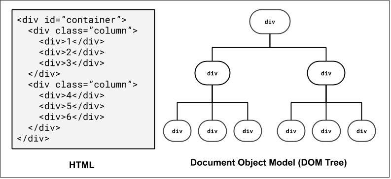

CSE 154
Lecture 4: More CSS and the Box Model
Reminders
Last day to submit CP1 is today - HW1 is due Thursday
To submit your assignments, remember to follow the full turn-in process (see slides below).
Turn-In Process (for all assignments)
- Check your code in the validators to catch errors.
- git add, commit and push the files
- Go to your gitlab repository and make sure your submission is uploaded.
- Go to the course website page with the assignment and hit the "turn in" button.
- Turn in the assignment on that page (this can be done multiple times - we will grade the most recent one)
If you completed the turn-in demo from Thursday's section, make sure you've re-submitted (add/commit/push and then Turn-In) after your final changes.
Lecture Objectives
By the end of this lecture, you should be able to:
- Learn a bit more about different selectors
- Identify the relationship between HTML and the "Document Object Model" (DOM)
- Use more CSS properties for colors, fonts, and text
- Use CSS to set background images to elements in a few different ways
- Define the box model and identify the difference between margin, padding, and border
CSS Overview in Module 1
- HTML/CSS Connection (Friday)
- Selectors (Friday, Video)
- CSS Properties: Colors, Fonts, Text, Backgrounds (More Today)
-
Layout
- Box Model
- Text Alignment
- Flexbox! (Motivation tomorrow, but focus of Wednesday)
- Position and floats (touch on Wednesday)
CSS Selectors Review
| Classifcation | Description | Example |
|---|---|---|
| Type Selector | Selects an element type | p |
| Class Selector | Selects all elements with the given class attribute value | .koala-face |
| ID Selector | Selects the element with the unique id attribute value | #scientific-name |
| Descendent Combinator: A B |
Selects all B descendents somewhere inside A elements | ul li |
| Child Combinator: A > B |
Selects all B descendents directly inside A elements | ul > li |
We can also combine selectors:
.borderedselects all elements with the bordered class.h2.borderedselects only h2 elements with the bordered class.
Refer to this video for more details!
The Document Object Model
How the browser represents the hierarchy of a page - very useful when thinking about selectors!
We'll return to this when we introduce JavaScript, where we can dynamically access/modify element "nodes" in the DOM tree.
For those of you interested in accessibility on the web, there is also a related concept known as Accessibility Tree
DOM and Selectors: Q1
How to select the colored elements?
Using ID selector: #container
DOM and Selectors: Q2

How to select the colored elements?
Using a class selector: .column
Using a combinator selector: #container > div
DOM and Selectors: Q3
How to select the colored elements?
Using a class and descender combinator selector: .column div
Using a class and child combinator selector: #container > div > div
DOM and Selectors: Q4
How to select the colored elements?
Grouping elements: #container, .column
CSS
pseudo-classes
a:link { color: #FF0000; } /* unvisited link */
a:visited { color: #00FF00; } /* visited link */
a:hover { /* mouse over link */
color: #FF00FF;
cursor: pointer; /* can set new pointer icon, usually a "hand" */
}
CSS
Example (HTML)
| Class | Description |
|---|---|
| :hover | an element that has the mouse over it |
| :visited | a link that has already been visited |
| :first-child | an element that is the first one to appear inside another |
| :nth-child(N) | applies to every Nth child of a given parent |
There are many more, but these tend to be most common.
Using the nth-child Psuedo-class
Example (CodePen)
Cascading Style Sheets
It's called Cascading Style Sheets because the properties of an element cascade together in this order:
- Browser's default styles (reference)
- External style sheets (in a
<link>tag) - Internal style sheets (in a
<style>tag in the page header) - Inline style (the
styleattribute of an HTML element)
Inheriting styles (explanation)
body { font-family: sans-serif; background-color: green; }
p { color: red; background-color: lightgreen; }
a { background-color: white; }
h2 { font-weight: bold; text-align: center; }
CSS
output
When multiple styles apply to an element, they are inherited
A more tightly-matching rule can override a more general inherited rule
Not all properties are inherited (notice link's color above)
Styles that Conflict
body { color: green; }
p, h1, h2 { color: blue; font-style: italic; }
h2 { color: red; background-color: yellow; }
CSS
This paragraph uses the first style above
This heading uses both styles above
output
When two styles set conflicting values for the same property, the latter style generally takes precedence
You can learn more about CSS specificity if you're curious! But we won't go into it this deep.
CSS Validator
In addition to the W3C HTML Validator, W3C also has an official CSS Validator which checks that your CSS meets the official CSS specification.
More picky than the web browser, which may render malformed CSS correctly.
Try to copy/paste the CSS below and use the CSS Validator to fix it!
h1 < span {
color: FFFFFF
}CSS
Table of Common Text/Color/Background CSS Rules (more here)
| CSS Rules | Description |
|---|---|
color,
background-color
|
Foreground (text) color and background color styles |
font-family,
font-size,
font-style,
font-weight
|
Various font styles |
text-align,
text-decoration,
text-indent,
text-shadow,
text-transform
|
Various text styles |
line-height,
word-spacing,
letter-spacing
|
Line/word/letter spacing styles |
list-style-type |
List item styling (e.g. bullet styles) |
background-image,
background-repeat,
background-position,
background-attachment,
background-size
|
Various background styles |
Different Ways to Use Colors in CSS
p { color: red }
h2 { color: rgb(128, 0, 196); }
h4 { color: #FF8800; }
CSS
This paragraph uses the first style above
This h2 uses the second style above
This h4 uses the third style above
output
With Color names: aqua, black, blue, fuchsia, gray, green, lime, maroon, navy, olive, purple, red, silver, teal, white, yellow
With RGB codes: red, green, and blue values from 0 (none) to 255 (full)
With Hex codes: RGB values in base-16 from 00 (0, none) to FF (255, full)
Example: To get red font, you can use either "red", "rgb(255, 0, 0)", or "#FF0000" (try it!).
CSS Properties for Fonts
| Property | Description |
|---|---|
| font-family | which font will be used |
| font-size | how large the letters will be drawn |
| font-style | used to enable/disable italic style |
| font-weight | used to enable/disable bold style |
| Complete list of font properties | |
font-family
h4 {
font-family: "Courier New", monospace;
}
p {
font-family: Georgia, serif;
}CSS
This h4 uses the second style above
This paragraph uses the first style above
output
Enclose multi-word font names in quotes
More about font-family
p {
font-family: Garamond, "Times New Roman", serif;
}CSS
This paragraph uses the above style
output
Generic font names:
- serif, sans-serif, cursive, fantasy, monospace
Can specify multiple fonts from highest to lowest priority - if the first font is not found on the user's computer, the next is tried (generally should specifiy similar fonts)
Placing a generic font name at the end of your font-family value ensures that every client will use an appropriate font
Refer to Friday's lecture for how to use Google Fonts
font-size and Length Units
p {
font-size: 14pt;
}CSS
This paragraph uses the above style
output
Common Units (more details in above link):
- Pixels (px) - e.g., 16px
- Point (pt) - e.g., 16pt
- m-size (em) - e.g., 1.16em
Vague font sizes: xx-small, x-small, small, medium, large, x-large, smaller, larger,
Percentage font sizes: 90%, 120%
font-style,
font-weight
p {
font-style: italic;
font-weight: bold;
}CSS
This paragraph uses the above style
output
Some elements are rendered by default with font styles (e.g. headings have bold font weight) - you can set either property value to normal to turn them off.
CSS properties for text
| Property | Description |
|---|---|
text-align
|
alignment of text within its element |
text-transform
|
controls capitalization of text |
text-decoration
|
decorations such as underlining |
text-indent
|
indents the first letter of each paragraph |
text-shadow
|
a colored shadow near an existing piece of text (CSS3) |
line-height,
word-spacing,
letter-spacing
|
gaps between the various portions of the text |
| Complete list of text properties | |
text-transform
<p>
I <span>just</span> just <em>CAN'T</em> <strong>make up my mind!</strong>
</p>HTML
em {
text-transform: lowercase;
}
span {
text-transform: capitalize;
}
strong {
text-transform: uppercase;
}CSS
I just just CAN'T make up my mind!
output
text-decoration
p { text-decoration: underline; }
CSS
This paragraph uses the style above
output
Can also be overline, line through, blink or none
Effects can be combined:
p { text-decoration: overline underline; }CSS
This paragraph uses the style above
output
CSS Properties for Backgrounds
| Property | Description |
|---|---|
background-color
|
color to fill background (previously mentioned) |
background-image
|
image to place in background |
background-position
|
placement of background image within element |
background-repeat
|
how background image should be repeated |
background-attachment
|
whether background image scrolls with page |
background-size
|
how large the background appears behind the element |
background
|
shorthand to set all background properties |
| More background properties and examples | |
background-image
body {
background-image: url("coffee-ascii.png");
}CSS
This is the first paragraph
This is the second paragraph...
It occupies 2 lines
output
Background image/color fills the element's content area
Inspect and experiment with example code here!
background-repeat
body {
background-image: url("coffee-ascii.png");
background-repeat: no-repeat;
}CSS
This is the first paragraph
This is the second paragraph...
It occupies 2 lines
output
Can be repeat (default), repeat-x,
repeat-y, or no-repeat
background-position
body {
background-image: url("coffee-ascii.png");
background-repeat: no-repeat;
background-position: 370px 20px;
}CSS
This is the first paragraph
This is the second paragraph...
It occupies 2 lines
output
Value consists of two tokens, each of which can be top,
left, right, bottom,
center, a percentage, or a length value in px, pt, etc.
Value can be negative to shift left/up by a given amount
background-size
body {
background-image: url("coffee-ascii.png");
background-repeat-x: repeat;
background-size: 50px 100px;
}CSS
This is the first paragraph
This is the second paragraph...
It occupies 2 lines
output
Can define the size of the background image using width/height:
background-size: width height
Can also use cover to stretch the width of the image across the width of the element (example).
CSS and Layout
DOM Tree for a "Real" Page Layout
Let's inspect a simplified koala page to preview some layout techniques!
Layout Techniques in CSS
- Appropriate use of Block vs. Inline elements and nesting in HTML
- Box Model (margin/padding/border)
- Flex
- Positioning
- Float (less common today, but still good to know)
These are what we expect you to focus on, roughly in order of prioritization
Default Dimensions of Block and Inline Elements
Height:
Block and inline elements normally have the height of their content
Width:
Inline elements have the width of their content
Block elements have a width that spans the width of their parent
<p id="css">
CSS is <strong>really</strong> great!
</p>
<p id="html">HTML is pretty cool too.<p>
HTML
#css { background-color: lightblue; }
#html { background-color: lightgreen; }
strong { background-color: white; }
CSS
CSS is really great!
HTML is pretty cool too.
output
Setting width and height (block only)
<p id="css">
CSS is <strong>really</strong> great!
</p>
<p id="html">HTML is pretty cool too.<p>
HTML
#css {
width: 80%;
height: 60px;
}
strong {
width: 120px; /* this doesn't work */
height: 50px; /* this doesn't work */
}
CSS
CSS is really great!
HTML is pretty cool too.
output
Inline-Block Elements
Inline elements have width/height that is defined based on their content.
Cannot set width/height (or vertical margin) of inline elements, but can change them to inline-block elements using the display property.
<p>
CSS is <strong>really</strong> great!
</p>
<p>HTML is pretty cool too.<p>
HTML
#css {
width: 80%;
height: 60px;
}
strong {
/* We still get the inline display,
but with width/height */
display: inline-block;
width: 120px; /* works! */
height: 50px; /* works! */
}CSS
CSS is really great!
HTML is pretty cool too.
output
More about Width and Height
Both can be set using length units (px, % are most common - when doing page layout, generally want to do % unless you know you have elements that are a fixed width)
Can specify the min-width, max-width, min-height, or max-height properties, which are particularly
useful for responsive design (more examples).
The Box Model: (Inspect me!)
Wait, what?
- margin
- (outside) space between different elements
- border
- (optionally visible) line that separates elements
- padding
- (inside) space between element content and border

Borders
h4 { border: 5px solid red; }
CSS
This is a heading.
output
| Property | Description |
|---|---|
border
|
thickness/style/color of border on all 4 sides |
Thickness (specified in px, pt, em, or
thin, medium,
thick)
Style
(none,
,
dotted,
dashed,
double,
groove,
inset,
outset,
ridge,
solid)
Color (specified as seen previously for text and background colors)
Tip: Use the Chrome Inspector to check out different styles!
More Border Properties
| Property | Description |
|---|---|
border-color,
border-width,
border-style
|
specific properties of border on all 4 sides |
border-bottom,
border-left,
border-right,
border-top
|
all properties of border on a particular side |
border-bottom-color,
border-bottom-style, border-bottom-width,
border-left-color, border-left-style,
border-left-width, border-right-color,
border-right-style, border-right-width,
border-top-color, border-top-style,
border-top-width
|
properties of border on a particular side |
Rounded corners with
border-radius
p {
border: 3px solid lightsalmon;
border-radius: 12px;
padding: 0.5em;
}CSS
This is a paragraph.
This is another paragraph.
It spans multiple lines.
output
Each side's border radius can be set individually, separated by spaces
Can set to 50% to get a full circle border (try it in the inspector!)
CSS Properties for Margins
Margin and padding values are also specified in px, pt, em, rem,
%
| Property | Description |
|---|---|
margin-bottom
|
margin on bottom side only |
margin-left
|
margin on left side only |
margin-right
|
margin on right side only |
margin-top
|
margin on top side only |
margin
|
shorthand for margin |
CSS Properties for Padding
| Property | Description |
|---|---|
padding-bottom
|
padding on bottom side only |
padding-left
|
padding on left side only |
padding-right
|
padding on right side only |
padding-top
|
padding on top side only |
padding
|
shorthand for padding |
Alignment
How do we align text? How about block elements (e.g. page sections)?
Horizontal and Vertical Alignment
-
text-align: (center | left | right | justify) - Align inline elements horizontally inside a parent container
-
vertical-align: (baseline | text-top | text-bottom | sub | super) - Align inline or inline-block (e.g. image) elements vertically relative to the text
Text and Image Alignment Examples
<div id="cup-container">
<p>
Some text!
<img id="cup1" src="coffee-ascii.png">
<img id="cup2" src="coffee-ascii.png">
</p>
</div>HTML
#cup-container { text-align: right; }
#cup1 { vertical-align: middle; }
#cup2 { vertical-align: text-top; }CSS
This is some text!
output
Vertical align can be tricky - usually use when centering images alongside text but can use flex layout (soon) to make centering a lot easier.
There are some good use cases though, and you can find a great read here.
But what about Alignment for Block Elements?
Centering Page Elements: An Attempt
<body>
<div id="box">
</body>
HTML
body {
/* Doesn't work on block elements! */
text-align: center;
}
#box {
background-color: orange;
height: 200px;
width: 200px;
}CSS
output
Inspect this page and use margin-right: auto; and margin-left: auto; on the blue block to center.
Centering Page Elements: A Solution
<body>
<div id="box">
</body>
HTML
#box {
background-color: #42affa;
height: 100px;
width: 100px;
margin-left: auto;
margin-right: auto;
}CSS
output
This margin approach "fills in" the left and right margins of the block based on the width (which must be defined!)
Summary of Box Model
Everything is a box.
Boxes can be block or inline
Boxes have content, padding, border, and margin
It can be a bit tricky to layout boxes next to each other, but the DOM tree and the Chrome Inspector are very useful development strategies!
Summary of Centering
text-align-- apply to a parent container to align the inline content within
vertical-align-- apply to inline items (usually those with a height, like an image)
to vertically align them relative to other inline elements nearby
margin-left: auto;, margin-right: auto-- use auto margins and a
width to center a block element in its parent
On Wednesday we'll learn flex layout - this can often be used instead of setting the margin (and also makes vertical alignment much easier)